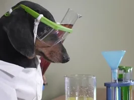

Scientific Calculator
Responsive calculator developed with HTML, CSS, and JavaScript.
GitHub Live Demo
Pebetsi Thokwane
Physics PhD Candidate
Graduate Software Engineering Candidate
I have a strong background in scientific research, analytical thinking, and problem solving. I am transitioning into software engineering through practical projects and continuous learning. I enjoy building useful software and learning modern development practices.
I am currently strengthening my frontend development skills by building practical projects using HTML, CSS, JavaScript, Git, and GitHub. After building a solid foundation in JavaScript fundamentals, I intend to continue learning React and modern front-end development practices.
My interest in software began because I wanted to understand how digital products are built and to create useful solutions myself. I enjoy building projects to learn, improve my skills, and develop practical experience. My recent work includes a personal portfolio website, a scientific calculator, a multi-page Pine City Zoo website, a superhero website, and a private research laboratory website redesign.

My scientific background has given me experience working with experimental data, materials characterisation results, technical writing, and complex problem solving. I have worked with research data, interpreted results carefully, and prepared clear technical reports and presentations. Python is part of my broader technical toolkit as I continue building practical software and analytical skills.
Responsive calculator developed with HTML, CSS, and JavaScript.
GitHub Live DemoResponsive multi-page zoo website built as a practical web project.
GitHub Live DemoResponsive website project focused on layout, styling, and content structure.
GitHub Live DemoResponsive portfolio website developed to present my academic and technical profile.
GitHub Live DemoHTML5, CSS3, JavaScript, Responsive Web Design
Python
Git, GitHub
VS Code, Chrome DevTools
Origin, PDXL, ImageJ
Problem Solving, Critical Thinking, Research, Technical Writing, Communication, Adaptability, Continuous Learning
I am looking for graduate software engineering opportunities where I can combine my Physics background, research experience, and software development skills while continuing to learn from experienced engineers.
Author or co-author of five research publications in renewable energy materials, nanomaterials, and computational materials science.
View Publications